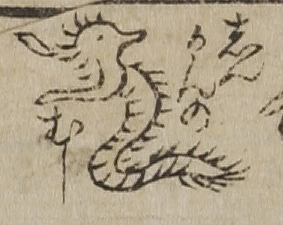

病気；ビョウキ，虫；ムシ，しんかん；シンカン

しんかんの虫。細長い胴体に毛が生え、長い口と前足をもつ。
出典：親書誌：U426_nichibunken_0017：セメンエン；セメンエン／日付：2006／資源識別子：U426_nichibunken_0017_0001_0000
Copyright (c)2010- International Research Center for Japanese Studies, Kyoto, Japan. All rights reserved.